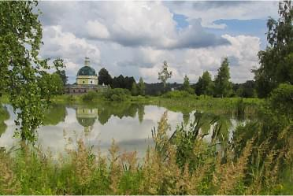
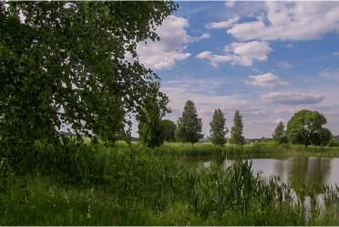
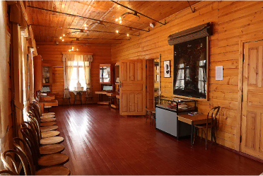

МУЗЕЙ-ЗАПОВЕДНИК МЕНДЕЛЕЕВА И БЛОКА
Музей рассказывает об истории дружбы двух семей:
Менделеевых и Бекетовых-Блока.
В усадьбах проходила жизнь двух семей, росли дети, вершились наука и поэзия. Именно эти места объединили две семьи вместе, связав узами брака Александра Блока и Любовь Менделееву.
В музей-заповедник входят три усадьбы: Боблово — усадьба Д.И. Менделеева, Шахматово — усадьба семьи Бекетовых-Блока, Тараканово — усадьба, где венчались Л.Д. Менделеева и А.А. Блок.


- Обращаем ваше внимание, что 8 января усадьбы будут закрыты. Далее мы работаем по обычному графику: со среды по воскресенье.
- Обращаем ваше внимание, что 8 января усадьбы будут закрыты. Далее мы работаем по обычному графику: со среды по воскресенье.
- Обращаем ваше внимание, что 8 января усадьбы будут закрыты. Далее мы работаем по обычному графику: со среды по воскресенье.
- РЕЖИМ РАБОТЫ МУЗЕЯ-ЗАПОВЕДНИКА:Выходные дни
во всех усадьбахПонедельник
Вторник - Шахматово и ТаракановоСреда — Воскресеньес 9:30 до 18:00Кассас 9:30 до 17:30
- БобловоСреда — Воскресеньес 9:00 до 17:30Кассас 9:00 до 17:00
Афиша
Познакомьтесь с усадьбами
Музея-заповедника
В усадьбах проходила жизнь двух семей, росли дети, вершились наука и поэзия. Именно эти места объединили две семьи вместе, связав узами брака Александра Блока и Любовь Менделееву.
-
И серый дом, и в мезонине
Венецианское окно,
Цвет стекол — красный, жёлтый, синий,
Как будто так и быть должно.Усадьба Шахматово
История усадьбыУсадьба была приобретена дедом А. Блока — А.Н. Бекетовым в 1874 году по совету близкого друга семьи — Д.И. Менделеева. Каждое лето А. Блок приезжал в Шахматово на протяжении 36 лет своей жизни. Здесь усадебный дом с личными вещами поэта и членов его семьи, венецианские окна и дух поэзии…

-
5 июня 1865 года командирован
в Москву на всеобщую выставку.
Тут с Ильиным и купил БобловоУсадьба Боблово
История усадьбыИмение, которое принадлежало воздухоплавателю, экономисту, путешественнику, учёному, изобретателю — Д.И. Менделееву (да-да, Менделеев был не только химиком, но и очень разносторонним человеком). Если хотите узнать много нового о жизни и научной деятельности Менделеева — вам точно нужно посетить Боблово.

-
Падет туманная завеса.
Жених сойдет из алтаря.
И от вершин зубчатых леса
Забрежжит брачная заряУсадьба Тараканово
История усадьбыУсадьба капитана И.В. Тараканова. Здесь сохранилась земская школа, где раньше учили крестьянских детей, и в этом мемориальном здании — экспозиция, посвящённая жизни и творчеству поэта Серебряного века — А.А. Блока. На территории усадьбы: церковь Михаила Архангела, где венчался Александр Блок с дочерью Д.И. Менделеева — Любовью Менделеевой, памятник, прекрасный пруд и необъятные дали.

-
Музей-заповедник
История музея-заповедникаУсадьба капитана И.В. Тараканова. Здесь сохранилась земская школа, где раньше учили крестьянских детей, и в этом мемориальном здании — экспозиция, посвящённая жизни и творчеству поэта Серебряного века — А.А. Блока. На территории усадьбы: церковь Михаила Архангела, где венчался Александр Блок с дочерью Д.И. Менделеева — Любовью Менделеевой, памятник, прекрасный пруд и необъятные дали.

Новости
Все новости- 15 декабряГрафик работы усадеб в праздничные дни
Приглашаем вас в усадьбы в новогодние каникулы!Наш музей-заповедник начинает работу с 3 января. Всю праздничную неделю для вас будут проводиться экскурсии и новогодние программы.
К новости - 15 декабряНовогодние программы
Новый год на носу! Новогодние программы будут проводиться с 20 по 30 декабря и с 2 по 14 января по предварительной записи. Бронирование мест осуществляется по телефону: +7 965 252-83-94. Время бронировать места на новогодние программы в музее-заповеднике:«Весёлый снеговик» в усадьбе Тараканово
К новости - 12 ноябряНовогодние программы
Новый год на носу! Новогодние программы будут проводиться с 20 по 30 декабря и с 2 по 14 января по предварительной записи. Бронирование мест осуществляется по телефону: +7 965 252-83-94. Время бронировать места на новогодние программы в музее-заповеднике:«Весёлый снеговик» в усадьбе Тараканово
К новости
Условия посещения
музея-заповедника
Ознакомиться со всеми условиямиВажно! Не забудьте!
Добавить блок на главной странице о «Условия посещения музея-заповедника. Мы находимся за городом. Важно предупредить посетителей об удобной обуви, отсутствии общепита, запрете на посещение усадеб с животными и т.д». Также упомянуть о парковке.
Парковка
Добавить блок на главной странице о «Условия посещения музея-заповедника. Мы находимся за городом. Важно предупредить посетителей об удобной обуви, отсутствии общепита, запрете на посещение усадеб с животными и т.д». Также упомянуть о парковке.
Возьмите еду с собой!
Добавить блок на главной странице о «Условия посещения музея-заповедника. Мы находимся за городом. Важно предупредить посетителей об удобной обуви, отсутствии общепита, запрете на посещение усадеб с животными и т.д». Также упомянуть о парковке.
С животными нельзя!
Добавить блок на главной странице о «Условия посещения музея-заповедника. Мы находимся за городом. Важно предупредить посетителей об удобной обуви, отсутствии общепита, запрете на посещение усадеб с животными и т.д». Также упомянуть о парковке.
Контакты
- Официальный сайт музея-заповедника:Почта организатора экскурсий:
- Официальный электронный почтовый ящик:Телефон организатора экскурсий:
(со вторника по воскресенье)